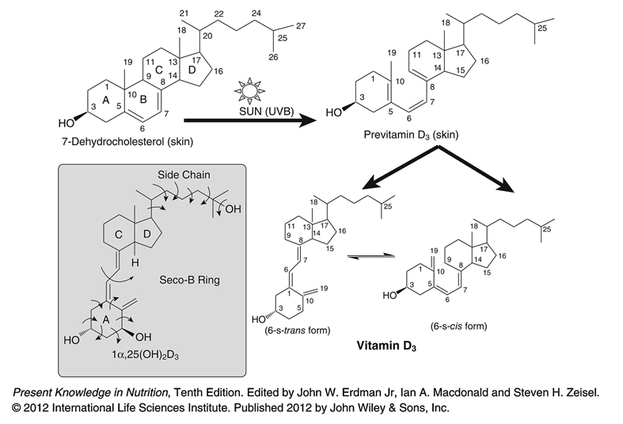
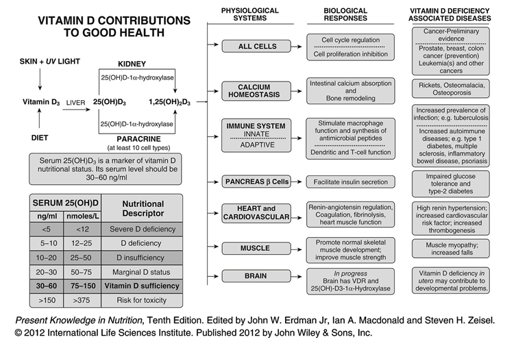

D-vitamin
Tilbake til artikkelserien om næringsstoffene
D-vitamin er et spesielt vitamin. Vi kan tilføre vitaminet gjennom kosten, eller produsere det selv ved hjelp av sollys. Det er et stort fokus på D-vitamin om dagen, og flere matvarer berikes med dette vitaminet for å sikre et tilstrekkelig inntak i befolkningen generelt. Tradisjonelt sett har man trodd at D-vitamin bare hadde en funksjon i kalsiummetabolismen, men den siste tiden er det identifisert en rekke nye funksjoner, noe som har ført til en diskusjon om hvorvidt dagens anbefalinger er tilstrekkelige.
D-vitamin finnes i to varianter. D2, ergokalsiferol, som syntetiseres fra plankton, sopp og gjær, og D3, kolekalsiferol, som pattedyr syntetiserer ved hjelp av sollys. D3 er dominerende i vårt daglige inntak, og D2 brukes i hovedsak til å berike matvarer siden det er billig å produsere. D-vitamin er en samlebetegnelse for de to variantene.
Det er nå bred enighet om at den aktive formen for D-vitamin er et steroidhormon. Men ettersom det store deler av året ikke er tilstrekkelig sollys til å produsere vitaminet så holder man foreløpig på vitaminbetegnelsen. I kroppen utfører vitaminet sine funksjoner via en hormonlignende forbindelse kalt kalsitriol, men siden det ikke alltid er tilstrekkelig sollys til å dekke behovet, er vi ofte avhengig av tilførsel gjennom kosten, derav betegnelsen som vitamin. I denne artikkelen vil jeg bruke vitaminbegrepet.
Opptak og metabolisme
Som nevnt i innledningen kan kroppen tilføres D-vitamin på to ulike måter:
- Via kosten:
D-vitamin er fettløselig, og er derfor avhengig av fett i kostholdet for å tas opp i tarmen. Vitaminet pakkes sammen med andre fettløselige substanser inn i miceller, som diffunderer inn i tarmcellene. I tarmcellene pakkes vitaminet inn i kylomikroner, og fraktes med lymfesystemet til leveren, der enzymer omdanner vitaminet til 25(OH)D, som er formen som transporteres i blodet. Begge formene av D-vitamin kan tilføres på denne måten.
- Egenproduksjon:
Kolesterol i huden omdannes til 7-dehydrokolesterol, som er provitamin D3. Når UVB-strålene treffer huden, omdannes 7-dehydrokolesterol til vitamin D3. Det vitaminet som dannes vil enten fraktes med blodet til leveren, eller deaktiveres av videre eksponering for sollys. D3 kan dannes i to ulike former, cis- og trans-, som påvirker funksjonen (se figuren).

Egenproduksjon av D-vitamin er mye høyere enn inntak via kosten, og 5-15 minutters eksponering for solen 3 dager i uken er nok til å dekke behovet. Solfaktor 8 eller høyere blokkerer effektivt produksjonen, så man bør oppholde seg litt i solen før man finner frem solkremen. Har du mørkere hudfarge trenger du lenger tid i solen for å produsere vitaminet. Lenger sør, der man eksponeres for sterkere sollys enn i Norge er ikke dette noe problem, men mørkhudede som lever her oppe kan risikere å ikke produsere nok. D-vitamin kan lagres i fettvev, noe som gjør det mulig å produsere nok vitamin om sommeren til å klare seg gjennom vinteren.
Metabolismen av D-vitamin inkluderer hydroksylering til 25(OH)D i leveren, og enda en hydroksylering i nyrene til 1,25(OH)2D (heretter bare 1,25D) eller 24,25(OH)2D (heretter bare 24,25D). D-vitamin skilles til slutt ut gjennom urinen etter å ha blitt omdannet til en inaktiv metabolitt, 1,24,25(OH)2D (heretter bare 1,24,25D), i nyrene. Den aktive formen av vitaminet stimulerer sin egen nedbrytning, noe som er med å regulere nivåene.
25(OH)D er den primære sirkulerende formen av vitaminet. Denne formen i nyrene omdannes til to ulike aktive former, som er ansvarlig for hvordan D-vitamin utfører sine funksjoner. Den mest kjente formen er 1,25D som kan binde til vitamin-D-reseptoren (VDR) i cellekjernen og dermed være med å regulere genuttrykket. Som nevnt kommer D3 i to utgaver, og det er 1,25D fra transformen som binder til VDR i cellekjernen og virker gjennom genetiske mekanismer. Cisformen kan på sin side binde til et alternativt bindingssete på VDR, og virker gjennom raske, ikke-genetiske mekanismer. Den andre aktive formen er 24,25D, men dennes funksjoner er mindre studert enn 1,25D.
Når D-vitamin er bundet til VDR i cellekjernen, vil dette komplekset gå sammen med en annen reseptor, RXR (Retinoid X-reseptor), og sammen vil hele komplekset binde til vitamin-D-responsive elementer på DNA, som kan regulere et gen opp eller ned. Den alternative virkningsmekanismen skjer som nevnt gjennom binding til et alternativt bindingssete som befinner seg i cellemembranen, som blant annet kan aktivere ulike proteiner eller regulere åpning av transportkanaler, og dermed medføre raske biologiske responser.
Funksjoner
Som nevnt i innledningen så trodde man opprinnelig at D-vitamin bare hadde sin funksjon i beinmetabolismen gjennom å regulere kalsium- og fosfatmetabolismen. Nå er det god dokumentasjon for at D-vitamin også påvirker immunsystemet, bukspyttkjertelen, hjertefunksjon og hjernen.

Figuren over oppsummerer alle effektene D-vitamin har i de ulike fysiologiske systemene. I alle celler er D-vitamin nødvendig for regulering av cellesyklusen. Det er bare nyrene som danner aktive metabolitter som sendes ut i blodbanen som et hormon. Andre celler kan også danne kalsitriol, men bare til eget bruk. Økte nivåer av kalsitriol har vist seg å hemme kreftceller, spesielt i bryst, tykktarm, lunge, prostata og huden.
Hjertefunksjon og kardiovaskulær helse er avhengig av D-vitamin. Vitaminet regulerer hormoner som er sentrale i regulering av blodtrykket. I tillegg er det viktig for blodets koagulering og funksjon av selve hjertemuskelen.I bukspyttkjertelen er D-vitamin viktig for insulinutskillelsen, og derfor innblandet i metabolismen av først og fremst karbohydrater, men også fett og protein. D-vitamin har også vist seg å være viktig for funksjonen til celler i immunsystemet, og stimulerer produksjonen av antimikrobiale peptider.
Behov og anbefalinger
Anbefalt inntak av D-vitamin er 10µg/dag, og litt høyere for spedbarn og eldre. Internasjonalt er D-vitaminanbefalingene i form av IU (International Units). 1µg=40 IU, noe som gir oss at de norske anbefalingene på 10 µg tilsvarer 400 IU. IU = IE på norsk, internasjonale enheter.
Anbefalingene er beregnet til den mengden som er tilstrekkelig for å unngå en reduksjon i beintettheten, og dermed utvikling av beinskjørhet. Mye tyder likevel på at det fysiologiske behovet kan være høyere, da D-vitamin ser ut til å ha mange flere funksjoner i kroppens celler.
I Norden anses verdier over 50 nmol/L som tilstrekkelig, noe som var konklusjonen etter en metaanalyse publisert i 2013, mens amerikanerne opererer med litt høyere verdier (75-150nmol/L).
Mangeltilstander
Den mest kjente mangelsykdommen knyttet til D-vitamin, er rakitt, også kjent som engelsk syke. Rakitt rammer små barn som ikke har tilstrekkelige nivåer av D-vitamin, og fører til at skjelettet ikke får den nødvendige styrken, som igjen gir deformerte bein/knokler. D-vitaminmangel kan hos voksne gi en variant av denne sykdommen som kalles osteomalasi, som kjennetegnes ved at mineraliseringen av beinvev ikke er god nok. Dette fører til svakere skjelett, som over tid kan gi deformering av knoklene. Osteomalasi kan over tid føre til beinskjørhet.
Som nevnt i avsnittet lenger oppe har man nå avdekket veldig mange funksjoner for D-vitamin, og lave nivåer er assosiert med en rekke sykdommer. Som følge av at vitaminet er viktig for regulering av cellesyklus er mangel satt i sammenheng med en rekke kreftformer. Koblingene til immunsystemet har gitt en kobling til mange autoimmune sykdommer som diabetes type 1, MS, inflammatoriske tarmsykdommer og psoriasis.
D-vitamin er også viktig for funksjonen til bukspyttkjertelen, noe som har gitt opphav for en kobling til glukoseintoleranse og diabetes type 2. Risikofaktorer for hjertesykdom påvirkes også som følge av mangel, og både høyt blodtrykk og trombogenese antas å kunne forårsakes av dette.
De vanligste symptomene på D-vitaminmangel hos voksne er muskelsvakhet og beinsmerter.
Genetiske defekter i D-vitaminmetabolismen
Det er identifisert en rekke genetiske sykdommer som rammer D-vitaminmetabolismen, og som fører til mange av de samme symptomene som mangler vil. Disse sykdommene kan ramme ulike deler av D-vitaminmetabolismen, og dermed vil de også måtte behandles ulikt. Generelt vil disse defektene føre til hypokalsemi, hypofosfatemi og sekundær hyperparatyriodisme. Her er en kort oversikt over de ulike hovedgruppene:
Vitamin D-avhengig rakitt type 1A
- Dette skyldes en defekt i enzymet som omdanner 25(OH)D til 1,25D i nyrene. Der vil det ikke hjelpe å tilføre mer D-vitamin, ettersom problemet er at vitaminet ikke blir aktivert. Denne formen kalles ofte pseudovitamin-D-mangel.
Vitamin D-avhengig rakitt type 1B
- Denne varianten er ekstremt sjelden, og skyldes en defekt i enzymet som lager 25(OH)D i leveren.
Vitamin D-avhengig rakitt type 2A
- Denne varianten kalles også arvelig vitamin-D-resistent rakitt, og skyldes en mutasjon i vitamin-D-reseptoren. Ved denne tilstanden så må ofte kalsiumnivåene reguleres manuelt. Ettersom 1,25D stimulerer sin egen nedbrytning så vil man ofte ha høye nivåer sirkulerende i blodet.
Vitamin-D-avhengig rakitt type 2B
- Dette er en tilstand der man har en overproduksjon av proteiner som kan binde til vitamin-D-responsive elementer, slik at D/VDR/RXR-komplekset ikke kan gjøre jobben sin.Idiopatisk infantil hyperkalsemi
- Dette er en defekt i nedbrytningen av 1,25(OH)D. På grunn av at 1,25(OH) ikke brytes ned så vil effektene av D-vitamin overdrives, og man ender opp med hyperkalsemi.
Alle disse sykdommene er svært sjeldne, men det kan være greit å vite om at de finnes.
Kan vi få for mye?
D-vitaminforgiftning er sjelden, og krever et enormt inntak over lengre perioder. Symptomene kan sammenlignes med symptomene på hyperkalsemi (kalsiumforgiftning), som er assosiert med nyrestein og kalsifisering av mykt vev.
Risikoen for toksisitet øker ved blodkonsentrasjoner over 375 nmol/L.
Gode kilder
Fra naturens side finnes D-vitamin bare i et fåtall matvarer: fiskeleverolje (tran), fet fisk og eggeplomme og smør. Vitaminet er dessuten tilsatt i en rekke matvarer, som ekstra lett melk og margarin. Hovedkilden til D-vitamin er likevel ikke maten vi spiser, men egenproduksjon som følge av eksponering for sollys. Ved å eksponeres for sollys, vil du på kort tid produsere nærmere 10 000 IU, noe som med god margin utklasser det du klarer å få i deg gjennom kostholdet.
Aktuelt om D-vitamin
Her er en metaanalyse om D-vitamin publisert i forbindelse med de nye nordiske kostrådene (NNR2012)
De amerikanske anbefalingene for inntak av D-vitamin er nylig tredoblet fra 200 til 600 IU/dag.
Mye oppdatert og dagsaktuell informasjon om D-vitamin kan man finne på denne siden.
Tidsskriftet for den norske legeforeningen publiserte i 2010 en oversiktsartikkel om solarium, D-vitamin og hudkreft. Den finnes her.
Overlege og ekspert på D-vitamin, Mats Humble, holder et foredrag om vitaminet i Stockholm, anbefales!
Her er en god artikkel om de ulike genetiske effektene i Vitamin-D-metabolismen
Artikkelen er sist oppdatert desember 2013